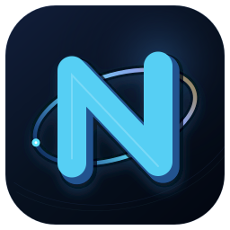
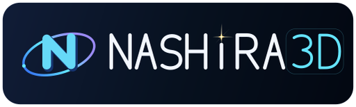

| frame | — |
| render | — |
| pass | — |
| offset | 0.00, 0.00 |

Nashira3D is a three‑dimensional plotting library for Python. It is built for pictures that are exact, predictable, and worth looking at — surfaces today; volumes, vector fields, and point clouds in time. The idea behind it is short: the hard part belongs inside the library, and what opens in front of you is space.
Nashira is the name the International Astronomical Union keeps on its list for γ Capricorni. Traditionally it means the fortunate one, or the one who brings good news.
I took it for the sound first — it is rare, and it is beautiful. Then it turned out to say what the project is. A point of light fixes a position in space. It gives depth to what would otherwise be flat. It turns darkness into a scene you can read.
I wanted three‑dimensional graphics in Python without the usual trade. The tools I had kept asking me to choose: simple or fast, handsome or portable, an interactive window or a file written on a machine with no screen at all. I wanted one way of working that holds in all three places.
No single program. What pulls me is the task itself — turning numbers into space. A function becomes a surface, a column of values becomes relief, a scatter of points becomes a shape, and a calculation becomes something you can walk around and understand.
Version 0.2 draws one thing: a surface z = f(x, y). That
is where it starts, not where it stops. Volumes, vector fields, point
clouds, and fuller scenes belong here as well, and the interface was
written so they can arrive without breaking what already works —
it asks you for quality, not for a grid size.
So take this as an experiment for now. The work is honest and the ground under it is solid, but it is not finished, and it will keep changing.